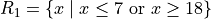
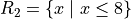
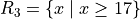
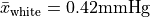
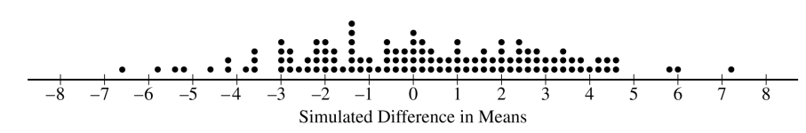

Hypothesis Testing#
Devore & Berk, 2007, Chapter 9.1 #6
Many older homes have electrical systems that use fuses rather than circuit breakers. A manufacturer of 40-amp fuses wants to make sure that the mean amperage at which its fuses burn out is in fact 40. If the mean amperage is lower than 40, customers will complain because the fuses require replacement too often. If the mean amperage is higher than 40, the manufacturer might be liable for damage to an electrical system due to fuse malfunction. To verify the amperage of the fuses, a sample of fuses is to be selected and inspected.
If a hypothesis test were to be performed, what null and alternate hypotheses would be of interest to the manufacturer?
Describe the Type I and Type II errors in this situation.
Devore & Berk, 2007, Chapter 9.1 #7
Water samples are taken from water used for cooling as it is being discharged from a power plant into a river. It has been determined that as long as the mean temperature of the discharged water is at most , there will be no negative effects on the river’s ecosystem. To investigate whether the plant is in compliance with the regulations that prohibit a mean discharge water temperature of above , 50 water samples will be taken at randomly selected times, and the temperature of each sample recorded.
State the null and alternate hypotheses that could be used to test whether the company was in violation of the regulation.
Describe what a Type I and a Type II error would be in the context of this problem.
Which error would you consider more serious? Explain.
Devore & Berk, 2007, Chapter 9.1 #9
Two different companies have applied to provide cable television service in a certain region. Let p denote the proportion of all potential subscribers who favor the first company over the second. Consider testing the null hypothesis,
versus the alternate hypothesis,
Suppose you select a random sample of 25 individuals. Let  denote the number in the sample who favor the first company and
denote the number in the sample who favor the first company and x represent the observed value of .
Which of the following rejection regions is most appropriate and why?



In the context of this problem, describe what Type I and Type II errors would be.
What is the probability distribution of the test statistic
is true? Use it to compute the probability of a Type I error.
Compute the probability of a type II error for the selected region when .
Using the selected region, what would you conclude if 6 of the 25 queried customers favored the first company?
Test Statistics
TODO
TODO
TODO
TODO
Decision Rules
TODO
TODO
TODO
TODO
P-Values
TODO
TODO
TODO
TODO
A.P. Exam Practice#
2007, Free Response, #5
Researchers want to determine whether drivers are significantly more distracted while driving when using a cell phone than when talking to a passenger in the car. In a study involving 48 people, 24 people were randomly assigned to drive in a driving simulator while using a cell phone. The remaining 24 were assigned to drive in the driving simulator while talking to a passenger in the simulator. Part of the driving simulation for both groups involved asking drivers to exit the freeway at a particular exit. In the study, 7 of the 24 cell phone users missed the exit, while 2 of the 24 talking to a passenger missed the exit.
Would this study be classified as an experiment or an observational study? Provide an explanation to support your answer.
State the null and alternative hypotheses of interest to the researchers.
One test of significance that you might consider using to answer the researchers’ question is a two-sample z-test. State the conditions required for this test to be appropriate. Then comment on whether each condition is met.
Using an advanced statistical method for small samples to test the hypotheses in part b, the researchers report a p-value of 0.0683. Interpret, in everyday language, what this p-value measures in the context of this study and state what conclusion should be made based on this p-value.
2008, Free Response Form B, #4
A researcher wants to conduct a study to test whether listening to soothing music for 20 minutes helps to reduce diastolic blood pressure in patients with high blood pressure, compared to simply sitting quietly in a noise-free environment for 20 minutes. One hundred patients with high blood pressure at a large medical clinic are available to participate in this study.
Propose a design for this study to compare these two treatments.
The null hypothesis for this study is that there is no difference in the mean reduction of diastolic blood pressure for the two treatments and the alternative hypothesis is that the mean reduction in diastolic blood pressure is greater for the music treatment. If the null hypothesis is rejected, the clinic will offer this music therapy as a free service to their patients with high blood pressure. Describe Type I and Type II errors and the consequences of each in the context of this study, and discuss which one you think is more serious.
2009, Free Response, #1
A simple random sample of 100 high school seniors was selected from a large school district. The gender of each student was recorded, and each student was asked the following questions.
The responses are summarized in the table below.
Job Experience |
Male |
Female |
Total |
Never had a part-time job |
21 |
31 |
52 |
Had a part-time job during summer only |
15 |
13 |
28 |
Had a part-time job but not only during summer |
12 |
8 |
20 |
Total |
48 |
52 |
100 |
Use this information to answer the following questions.
Construct a graphical display that represents the association between gender and job experience for the students in the sample.
Write a few sentences summarizing what the display in part a reveals about the association between gender and job experience for the students in the sample.
Which test of significance should be used to test if there is an association between gender and job experience for the population of high school seniors in the district? State the null and alternative hypotheses for the test, but do not perform the test.
2009, Free Response, #5
For many years, the medically accepted practice of giving aid to a person experiencing a heart attack was to have the person who placed the emergency call administer chest compression (CC) plus standard mouth-to-mouth resuscitation (MMR) to the heart attack patient until the emergency response team arrived. However, some researchers believed that CC alone would be a more effective approach.
In the 1990s a study was conducted in Seattle in which 518 cases were randomly assigned to treatments: 278 to CC plus standard MMR and 240 to CC alone. A total of 64 patients survived the heart attack: 29 in the group receiving CC plus standard MMR, and 35 in the group receiving CC alone. A test of significance was conducted on the following hypotheses.
: : The treatment that uses CC alone produces a higher survival rate.
This test resulted in a p-value of 0.0761.
Interpret what this p-value measures in the context of this study.
Based on this p-value and study design, what conclusion should be drawn in the context of this study? Use a significance level of α = 0.05.
Based on your conclusion in part b, which type of error, Type I or Type II, could have been made? What is one potential consequence of this error?
2012, Free Response, #5
A recent report stated that less than 35 percent of the adult residents in a certain city will be able to pass a physical fitness test. Consequently, the city’s Recreation Department is trying to convince the City Council to fund more physical fitness programs. The council is facing budget constraints and is skeptical of the report. The council will fund more physical fitness programs only if the Recreation Department can provide convincing evidence that the report is true.
The Recreation Department plans to collect data from a sample of 185 adult residents in the city. A test of significance will be conducted at a significance level of for the following hypotheses.


where p is the proportion of adult residents in the city who are able to pass the physical fitness test.
Describe what a Type II error would be in the context of the study, and also describe a consequence of making this type of error.
The Recreation Department recruits 185 adult residents who volunteer to take the physical fitness test. The test is passed by 77 of the 185 volunteers, resulting in a p-value of 0.97 for the hypotheses stated above. If it was reasonable to conduct a test of significance for the hypotheses stated above using the data collected from the 185 volunteers, what would the p-value of 0.97 lead you to conclude?
Describe the primary flaw in the study described in part b, and explain why it is a concern.
2022, Free Response, #5
Studies have shown that foods rich in compounds known as flavonoids help lower blood pressure. Researchers conducted a study to investigate whether there was a greater reduction in blood pressure for people who consumed dark chocolate, which contains flavonoids, than people who consumed white chocolate, which does not contain flavonoids. Twenty-five healthy adults agreed to participate in the study and add 3.5 ounces of chocolate to their daily diets. Of the 25 participants, 13 were randomly assigned to the dark chocolate group and the rest were assigned to the white chocolate group. All participants had their blood pressure recorded, in millimeters of mercury ( mmHg ), before adding chocolate to their daily diets and again 30 days after adding chocolate to their daily diets.
The reduction in blood pressure (before minus after) for each of the participants in the two groups is shown in the dotplots below.

Use this information to answer the following question.
Determine and compare the medians of the reduction in blood pressure for the two groups.
The researchers found the mean reduction in blood pressure for those who consumed dark chocolate is and the mean reduction in blood pressure for those who consumed white chocolate is .
One researcher indicated that because the difference in sample means of 5.66 mmHg is greater than 0 there is convincing statistical evidence to conclude that the population mean blood pressure reduction for those who consume dark chocolate is greater than for those who consume white chocolate. Why might the researcher’s conclusion, based only on the difference in sample means of 5.66 mmHg , not necessarily be true?
A simulation was conducted to investigate whether there is a greater reduction of blood pressure for those who consume dark chocolate than for those who consume white chocolate. The simulation was conducted under the assumption that no difference exists. The results of 120 trials of the simulation are shown in the following dotplot.
Use this information to answer the following question.
Use the results of the simulation to determine whether the results from the 25 participants in the study provide convincing statistical evidence, at a 5 percent level of significance, that adding dark chocolate to a daily diet will result in a greater reduction in blood pressure, on average, than adding white chocolate to a daily diet. Justify your answer.
2012, Free Response, #3
Independent random samples of 500 households were taken from a large metropolitan area in the United States for the years 1950 and 2000. Histograms of household size (number of people in a household) for the years are shown below.

Use this information to answer the following questions.
Compare the distributions of household size in the metropolitan area for the years 1950 and 2000.
A researcher wants to use these data to construct a confidence interval to estimate the change in mean household size in the metropolitan area from the year 1950 to the year 2000. State the conditions for using a two-sample t-procedure, and explain whether the conditions for inference are met.